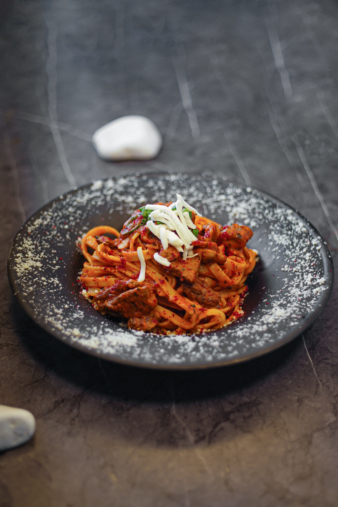

야채와 계란을 넣어 만든 스튜이다. 아랍어로는 ‘샥슈카(شكشوكة)’, 터키어로는 ‘샥슈카(Şakşuka)’라고 쓴다. 오스만 제국에서 기원하여 북아프리카에서 유래한 요리로 추정된다. 오스만 제국에서는 본래 고기를 첨가하여 먹었으나 이후 북아프리카 유대인들에 의해 고기가 아닌 달걀을 첨가하는 방식으로 만들어졌고, 북아프리카 유대인들이 이스라엘로 이주하기 시작하면서 이스라엘에서도 큰 인기를 끌게 되었다. 또한 오늘날에는 영어권의 다수 국가에서도 즐겨먹는 요리가 되었으며 '에그인헬(Egg in Hell)' 이라고 부른다.
팬 하나에 완성할 수 있는 쉽고 간단한 요리로, 그리스, 터키, 중동 지방에서 먹는 전채 요리 모둠인 메제(Mezze)에 포함되는 요리이며 사이드 디시로도 먹는다. 주로 아침식사로 즐겨 먹으나, 피타와 같은 빵이나 지중해식 콩 샐러드, 잘게 썬 양고기 등을 곁들여 브런치나 점심식사, 저녁식사로도 먹을 수 있다.